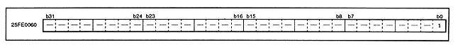

Return to previous page ｜ Return to menu ｜ Go to next page
-
■ DMA forced stop register
- In DMA control, there is a bit that forcibly stops DMA. This register is located at address 25FE0060H in the SCU and operates according to the map shown below.
Figure 3.11 DMA forced stop register (register: DSTP) Initial value 00000000H

- DMA forced stop bit (1 [bit 0] in Figure 3.11)
DSTOP (W) DMA STOP control bit
- DSTOP = 1: Stops the running DMA.
-
DMA status register
-
● Access, Suspend, Wait, Operation register
- Indicates DMA bus access specification and DMA status for each level.
There are four DMA statuses: interrupt, standby, operation, and stop. First, the operation relationship between high-level and low-level DMA is explained.
When starting a low-level DMA that is stopped when the high-level DMA is operating as shown in Figure 3.12, the low-level DMA does not become active when it is started, but waits once before operating. It will be inside. The period from when the stopped DMA is activated to when it is in operation is called standby, and this state is always before the DMA is in operation. The low-level DMA operates after the high-level DMA is complete.
∙ When starting a high-level DMA that is stopped while the low-level DMA is operating, the high-level DMA is not operating when it is started, but is operating after waiting. At this time, the low-level DMA is suspended, and the low-level DMA is not started until the high-level DMA is stopped (operation is completed).
Return to previous page ｜ Return to menu ｜ Go to next page